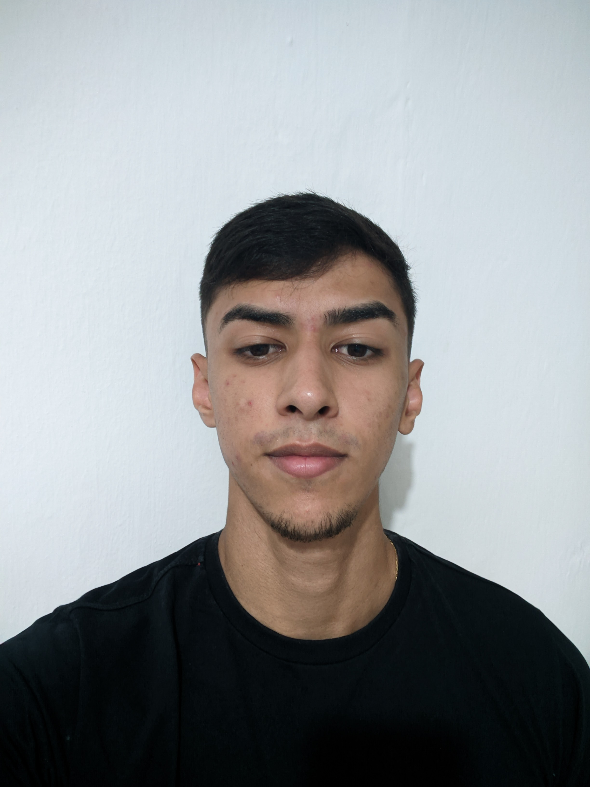

Robério Batista de azevêdo júnior.
Rua: Paulino alberto, nº100.
Telefone:(84) 99482-7470
E-mail: roberiojr15@hotmail.com

Objetivo
Pretendo cursar o curso de Sistemas para a Internet, buscando me qualificar
ainda mais como profissional para que um dia eu possa passar em um concurso
na área de tecnologia da informação e alcançar uma boa estabilidade financeira.
Formação Acadêmica
- Curso técnico integrado de Manutenção e suporte em informátia, pelo
Instituto Federal de Educação,ciência e tecnologia entre 2019 e 2022.
Experiência Profissional
-
Prática profissional realizada no laboratório de manutenção de computadores do
IFRN - Campus Currais Novos, na forma de tutoria de aprendizagem e laboratório - TAL,
de segunda-feira à sexta-feira, tendo-se iniciado no dia 08 de junho de 2022 e
finalizado no dia 31 de dezembro de 2022, totalizando no total 7 meses, com uma
carga horária de 3 horas diárias e 15 horas semanais.
Habilidades
- Bom conhecimento sobre Hardware.
- Básico de sistemas operacionais.
- Iniciando capacitação em HTML, CSS e Python.
Certificados
- Técnico Integrado em Manutenção e Suporte em Informática.